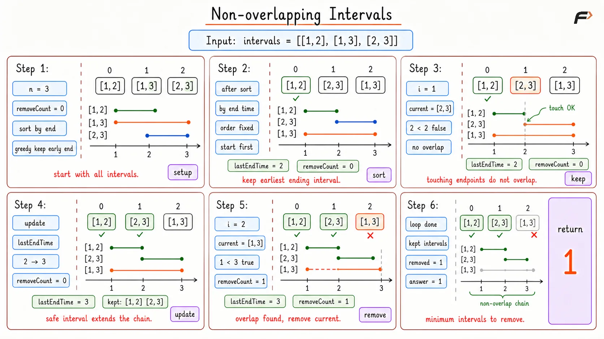

Non-overlapping Intervals: Minimum Removals
Given an array of intervals where each interval is represented by a start time and an end time. Find the minimum number of intervals you need to remove to make the rest of the intervals strictly non-overlapping. Note that intervals that only touch at the boundaries (for example, [1, 2] and [2, 3]) are not considered overlapping.
Example 1
Input: intervals = [[1, 2], [2, 3], [3, 4], [1, 3]]
Output: 1
Explanation: The interval [1, 3] overlaps with both [1, 2] and [2, 3]. By removing just the single interval [1, 3], the remaining schedule [[1, 2], [2, 3], [3, 4]] is perfectly conflict-free.
Example 2
Input: intervals = [[1, 2], [1, 2], [1, 2]]
Output: 2
Explanation: All three intervals occupy the exact same span of time. You must pick one to keep and remove the other two.
Approach
The goal is to keep as many non-overlapping intervals as possible. If two candidate intervals are available, keeping the one that ends earlier is safer because it blocks less future time.
Sorting by end time makes this greedy choice direct. The first interval is kept. After that, each interval is compared with the end time of the last kept interval. If its start time is smaller than that end time, it overlaps and must be removed. Otherwise, it can be kept, and the last kept end time is updated.
This works because every kept interval ends as early as possible among the remaining choices, so future intervals get the best chance to fit.
Algorithm
Return
0immediately when the interval list is empty.Sort intervals by their end time in ascending order.
Keep the first interval and store its end time as the current boundary.
Traverse the remaining intervals in sorted order.
If the current interval starts before the stored end time, count it as removed.
Otherwise, keep it and update the stored end time; return the final removal count.
Dry Run

Non Overlapping Intervals Dry Run
Solution
#include <bits/stdc++.h>
using namespace std;
class Solution {
public:
// Orders intervals by smaller end time first.
static bool comp(vector<int>& first, vector<int>& second) {
return first[1] < second[1];
}
// Returns the minimum number of intervals to remove.
int eraseOverlapIntervals(vector<vector<int>>& intervals) {
// Empty input has no overlapping interval to remove.
if (intervals.empty()) {
return 0;
}
// Sort intervals so the interval ending earliest is considered first.
sort(intervals.begin(), intervals.end(), comp);
int removeCount = 0;
int lastEndTime = intervals[0][1];
// Check every remaining interval against the last kept interval.
for (int i = 1; i < intervals.size(); i++) {
// A start before the last kept end time means the current interval overlaps.
if (intervals[i][0] < lastEndTime) {
removeCount++;
// A start at or after the last kept end time means the interval can stay.
} else {
lastEndTime = intervals[i][1];
}
}
return removeCount;
}
};
// Driver code
int main() {
vector<vector<int>> intervals = {{1, 2}, {2, 3}, {3, 4}, {1, 3}, {2, 4}, {4, 5}};
// instance for class Solution
Solution sol;
cout << sol.eraseOverlapIntervals(intervals) << '\n';
return 0;
}Complexity Analysis
Time Complexity: O(N log N). The absolute bottleneck of this algorithm is sorting the intervals based on their end times. The loop itself only visits each interval once, meaning it operates in linear O(N) time, but the overall time complexity is constrained by the initial sorting process.
Space Complexity: O(1). We strictly use a couple of integer variables to track the end time and the removal count. Note that some built-in language sorting functions may secretly use O(log N) auxiliary stack space beneath the hood, but no dynamic data structures are allocated.
Interview follow-up Questions
If you sort by start time, you run the risk of accepting an interval that starts early but spans a massive amount of time, like [1, 100]. This massive interval would force you to delete dozens of smaller valid intervals like [2, 3], [4, 5], etc. Sorting by the end time explicitly guarantees that we are leaving the maximum possible free space available on the right side of the timeline for future intervals to be safely accommodated.